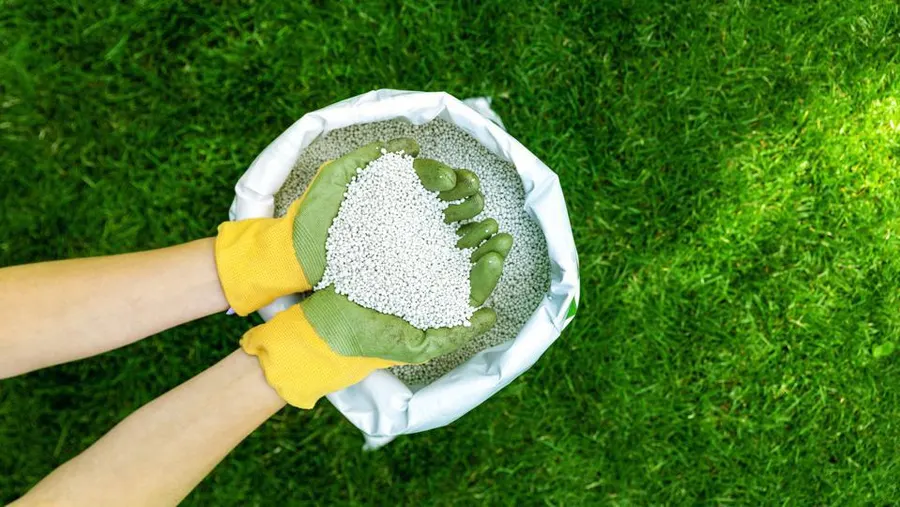
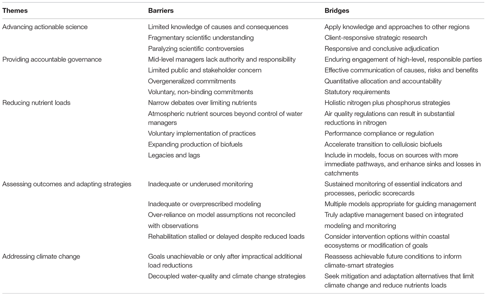

Potential Obstacles in Advocating
Overall, some of the practices that contribute to algae blooms are ones that people are accustomed to or find convenient for their lifestyles; therefore, they may not be willing to give them up.
1. Synthetic Fertilizers
Fertilizers help homeowners attain their goal of possessing a healthy lawn. A healthy lawn that comes about through fertilizers provides many benefits, such as “[limiting] erosion, [cooling] the environment, and [controlling] allergens, among many other benefits” (Bauer et al., 2018). Plants such as grass, trees, and flowers need these nutrients in order to repair damage done to them by normal wear and mowing. An unhealthy lawn is reflected by grass that contains patches, dry soil, weeds, and is tan or yellow in color. This is deemed unacceptable for many people, and therefore, the pride of many homeowners is maintaining a luscious lawn filled with the perfect green shade of grass, often using synthetic fertilizers and lawn sprinkler systems to achieve this.
2. Pesticides
Similar to homeowners, many golf courses rely on synthetic fertilizers to ensure healthy and luscious grass, which primarily serve to attract business to these golf courses and therefore, improve the local economy at which these establishments are located. They also use pesticides to ward off unwanted pests that could damage the grass. However, when “designers attempt to improve the aesthetic qualities of a golf course by locating it next to a river or lake”, it often “[results] in detrimental runoff from the fertilizers or pesticides used on the grass” (Bramble, et al., 2009). Another reason why it may be difficult to stop the use of pesticides or switch to environmentally friendlier alternatives, is because of laws that protect the freedom of fertilizer application of golf courses. For instance, in Nova Scotia’s “Non-Essential Pesticides Control Act”, pesticides for a golf course are exempted from this act, which would encourage these establishments to continue using these pesticides, at least in Nova Scotia.
3. Agricultural Productivity
Outside the neighborhoods of suburbia, specifically in the crop fields of subsistence farmers, synthetic fertilizer has multiple benefits. For instance, increased use of synthetic fertilizers can have “higher farm yields, reduced dependency on imports, improved food security, and lowered pressure on forested and other wild landscapes” (Ramachandran, et al., 2023). Although it is acknowledged that synthetic fertilizers contribute to pressing environmental issues such as algal blooms and greenhouse gas emissions, alternatives such as organic fertilizers can equally cause such problems Additionally, they actually do not increase productivity in agriculture. Low yielding agriculture that is practiced in Africa requires more land to produce more food than higher productivity agriculture. Since both the agricultural land and need to feed people have increased over the past few years, it is vital that African farmers are provided with the means to guarantee higher farm yields to achieve these purposes. In addition, since land expansion is the primary cause of deforestation and habitat loss, as well as a major threat to biodiversity, it becomes more necessary to grow more native crops through guaranteed means such as synthetic fertilizers. Therefore, synthetic fertilizers can both have environmental benefits and food security in the long run.

4. Cost
Remediation of algae blooms is not a simple, overnight process. Rather, it is a complex one that requires immense effort, time, and financial resources (i.e. funding and programs) to prevent and treat bodies of waters that are congested with algae blooms.
5. Diverging Opinions on Eutrophication Remediation
As mentioned before, treating and preventing eutrophication is not an overnight effort - the entire process is complex in that it requires tremendous effort, and even authorities debate on how to best remediate the bodies of water. Significant reduction in nutrient content in waters mainly comes from advanced treatment of wastewaters.
To delve into people’s diverging opinions on what is suitable for algae bloom reduction, there must be multiple factors involved, factors such as “physical settings, ecosystem characteristics, nutrient sources, socio-economic drivers, and governance” that vary based on what was found in coastal waters around the world (Boesch, 2019).
